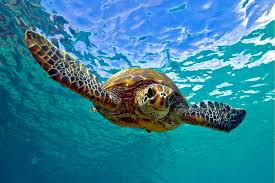
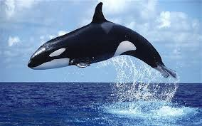
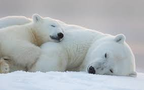

Turtles are reptiles of the order Testudines (or Chelonii) characterised by a special bony or cartilaginous shell developed from their ribs and acting as a shield. "Turtle" may refer to the order as a whole (American English) or to fresh-water and sea-dwelling testudines (British English).
The order Testudines includes both extant (living) and extinct species. The earliest known members of this group date from 157 million years ago, making turtles one of the oldest reptile groups and a more ancient group than snakes or crocodilians. Of the 327 known species alive today, some are highly endangered.
Turtles are ectotherms—animals commonly called cold-blooded—meaning that their internal temperature varies according to the ambient environment. However, because of their high metabolic rate, leatherback sea turtles have a body temperature that is noticeably higher than that of the surrounding water.
Turtles are classified as amniotes, along with other reptiles, birds, and mammals. Like other amniotes, turtles breathe air and do not lay eggs underwater, although many species live in or around water.
This is a Wikipedia page that will provide further information.
Whales are a widely distributed and diverse group of fully aquatic placental marine mammals. They are an informal grouping within the infraorder Cetacea, usually excluding dolphins and porpoises. Whales, dolphins and porpoises belong to the order Cetartiodactyla with even-toed ungulates and their closest living relatives are the hippopotamuses, having diverged about 40 million years ago. The two parvorders of whales, baleen whales (Mysticeti) and toothed whales (Odontoceti), are thought to have split apart around 34 million years ago. The whales comprise of eight extant families: Balaenopteridae (the rorquals), Balaenidae (right whales), Cetotheriidae (the pygmy right whale), Eschrichtiidae (the grey whale), Monodontidae (belugas and narwhals), Physeteridae (the sperm whale), Kogiidae (the dwarf and pygmy sperm whale), and Ziphiidae (the beaked whales).
Whales are creatures of the open ocean; they feed, mate, give birth, suckle and raise their young at sea. So extreme is their adaptation to life underwater that they are unable to survive on land. Whales range in size from the 2.6 metres (8.5 ft) and 135 kilograms (298 lb) dwarf sperm whale to the 29.9 metres (98 ft) and 190 metric tons (210 short tons) blue whale, which is the largest creature that has ever lived. The sperm whale is the largest toothed predator on earth. Several species exhibit sexual dimorphism, in that the females are larger than males. Baleen whales have no teeth; instead they have plates of baleen, a fringe-like structure used to expel water while retaining the krill and plankton which they feed on. They use their throat pleats to expand the mouth to take in huge gulps of water. Balaenids have heads that can make up 40% of their body mass to take in water. Toothed whales, on the other hand, have conical teeth designed for catching fish or squid. Baleen whales have a well developed sense of "smell", whereas toothed whales have well-developed hearing − their hearing, that is adapted for both air and water, is so well developed that some can survive even if they are blind. Some species, such as sperm whales, are well adapted for diving to great depths to catch squid and other favoured prey.
Whales have evolved from land-living mammals. As such they must breathe air regularly, though they can remain submerged for long periods. They have blowholes (modified nostrils) located on top of their heads, through which air is taken in and expelled. They are warm-blooded, and have a layer of fat, or blubber, under the skin. With streamlined fusiform bodies and two limbs that are modified into flippers, whales can travel at up to 20 knots, though they are not as flexible or agile as seals. Whales produce a great variety of vocalizations, notably the extended songs of the humpback whale. Although whales are widespread, most species prefer the colder waters of the Northern and Southern Hemispheres, and migrate to the equator to give birth. Species such as humpbacks and blue whales are capable of travelling thousands of miles without feeding. Males typically mate with multiple females every year, but females only mate every two to three years. Calves are typically born in the spring and summer months and females bear all the responsibility for raising them. Mothers of some species fast and nurse their young for one to two years.
Once relentlessly hunted for their products, whales are now protected by international law. The North Atlantic right whales nearly became extinct in the twentieth century, with a population low of 450, and the North Pacific grey whale population is ranked Critically Endangered by the IUCN. Besides whaling, they also face threats from bycatch and marine pollution. The meat, blubber and baleen of whales have traditionally been used by indigenous peoples of the Arctic. Whales have been depicted in various cultures worldwide, notably by the Inuit and the coastal peoples of Vietnam and Ghana, who sometimes hold whale funerals. Whales occasionally feature in literature and film, as in the great white whale of Herman Melville's Moby Dick. Small whales, such as belugas, are sometimes kept in captivity and trained to perform tricks, but breeding success has been poor and the animals often die within a few months of capture. Whale watching has become a form of tourism around the world.
This is a Wikipedia page that will provide further information.
The polar bear (Ursus maritimus) is a carnivorous bear whose native range lies largely within the Arctic Circle, encompassing the Arctic Ocean, its surrounding seas and surrounding land masses. It is a large bear, approximately the same size as the omnivorous Kodiak bear (Ursus arctos middendorffi). A boar (adult male) weighs around 350–700 kg (772–1,543 lb), while a sow (adult female) is about half that size. Although it is the sister species of the brown bear, it has evolved to occupy a narrower ecological niche, with many body characteristics adapted for cold temperatures, for moving across snow, ice and open water, and for hunting seals, which make up most of its diet. Although most polar bears are born on land, they spend most of their time on the sea ice. Their scientific name means "maritime bear" and derives from this fact. Polar bears hunt their preferred food of seals from the edge of sea ice, often living off fat reserves when no sea ice is present. Because of their dependence on the sea ice, polar bears are classified as marine mammals; an alternative basis for classification as marine mammals is that they depend on the ocean as their main food source.
Because of expected habitat loss caused by climate change, the polar bear is classified as a vulnerable species, and at least three of the nineteen polar bear subpopulations are currently in decline. For decades, large-scale hunting raised international concern for the future of the species, but populations rebounded after controls and quotas began to take effect.[9] For thousands of years, the polar bear has been a key figure in the material, spiritual, and cultural life of circumpolar peoples, and polar bears remain important in their cultures.
This is a Wikipedia page that will provide further information.
